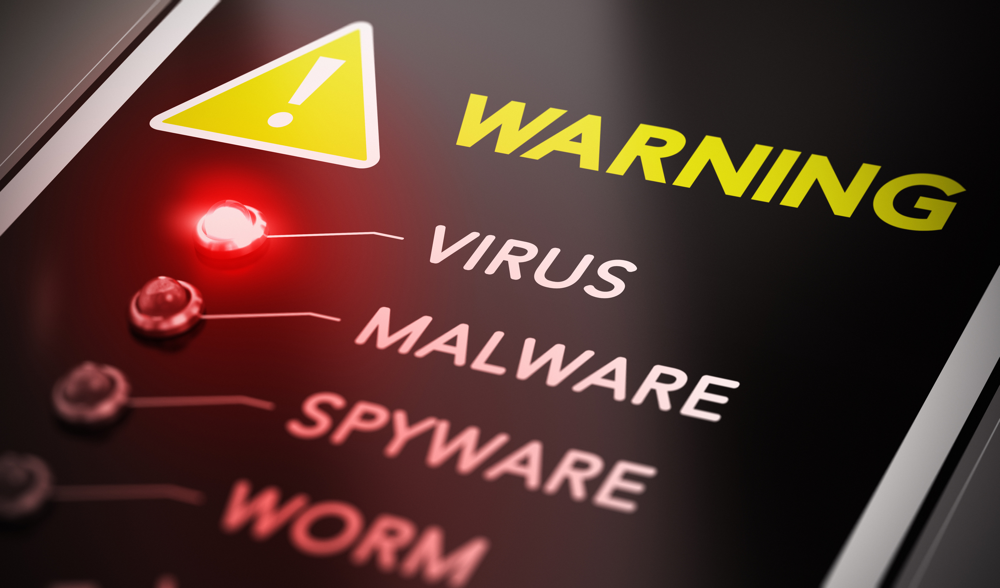
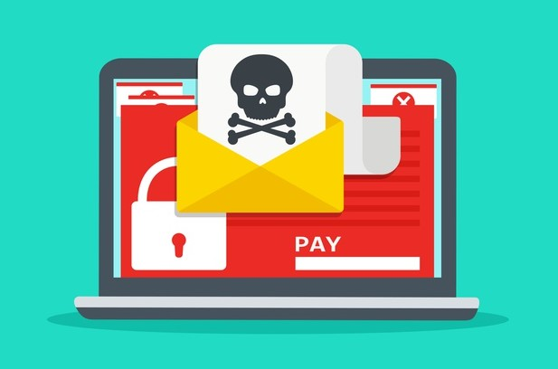
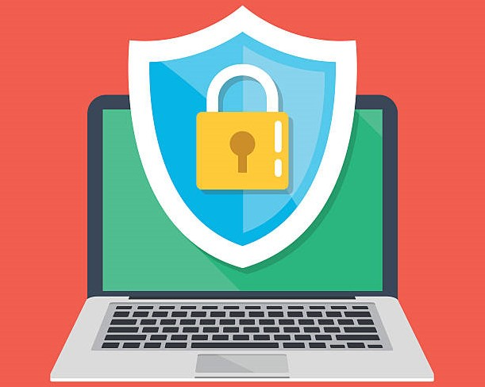

What is Spyware?
- Spyware comes in many varieties and its important to know what it is or isnt capable of, most malware can be avoided through common sense but ill go over the dangers of the most common types.
Types of Spyware Hackers
Here are some Dangerous types of spyware hackers could use to infect your computer:
1. Cookies: When you first go into a website you might see a popup that asks to enable cookies, while cookies arent inherently bad, just being small files that track website preferences and passwords for repeat visits, spyware could gather information stored on cookies without your knowledge through the use of tracking cookies
2. KeyLoggers: Keyloggers are a type of spyware that tracks the information you search. By tracking every keystroke you make and using the data it could be possible to guess passwords, credit card information, or sensitive information for years or even decades.
3. Adware: Adware is an application that causes random popups or advertisements on your browser, while it may not seem that harmful ads could choose not to be closed or even crash your computer. Its one of the more obvious ways of spyware but its still very dangerous.
How to avoid spyware:
1. Using the correct browser settings: Specific browsers are better at detecting spyware than others, While it is the default browser Internet Explorer allowing for popups and a general lack of security allows spyware to much easily infect your computer. Other than that settings such as disabling third party cookies or protection settings can help lowering the risk of spyware even if its at the cost of personal ease of use
2. Avoiding suspicious downloads/ websites: Remember to use common sense when avoiding shady websites, try avoiding downloads that seem too good to be true such as free downlaods for a game or show you want to watch, and if possible always run a scan on downloads you deem to not be 100% safe
3. Anti-Malware Through the use of downloading anti malware or depending on your default operating systems defender settings frequent scans or clearing out old files can be helpful for deleting spyware
4. Backups If you are sure you have been affected by a spyware always know a factory reset will clear out everything, if you dont want to lose your good files however you can set up backups of your computer and always revert to a healthier version if you think you have been infected by spyware